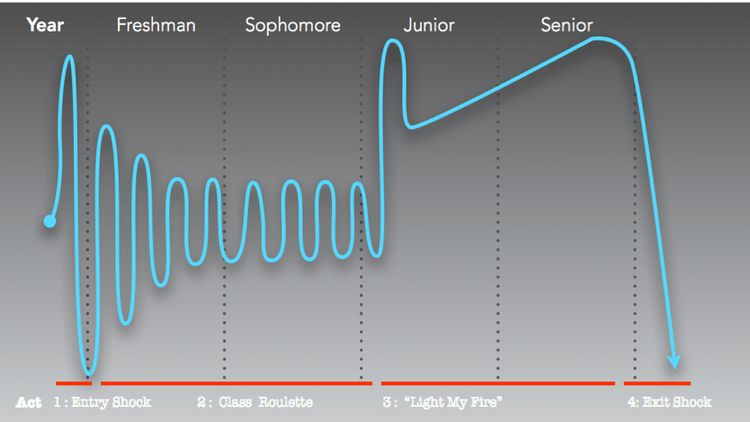
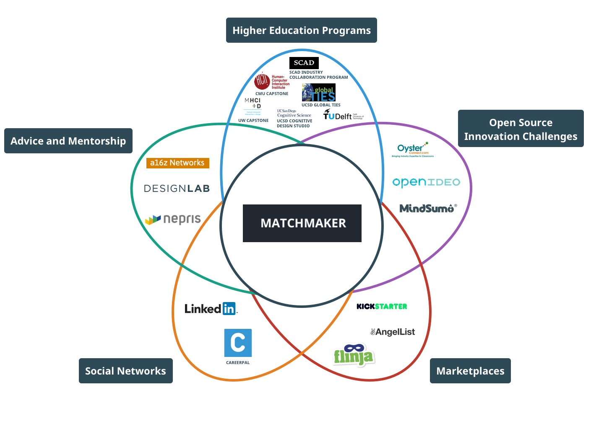

Made for: SAP and the Design Lab
Time: 3.5 months
Tools: Sketch, Invision
Challenge: How might we better prepare student for the needs of tomorrow by reimagining higher education?
Solution: We propose Matchmaker, a system that matches design-led courses with real-world problems for students to work on.
Since 2015 SAP has been working on scaling design thinking within higher education. They’re interest in design education led them to partner with the UC San Diego Design Lab.
I collaborated with SAP designers on behalf of the lab to conceptualize a platform that matches educators and classes to real world projects. I conducted competitive analysis, made wireframes, and designed an interactive storyboard prototype to communicate the idea behind the Matchmaker.
SAP’s design team conducted extensive user research with over 20 professors from 6 different colleges across the nation. Their biggest insight was that students are coming out of college nowhere near prepared for the realities of industry.

Student Journey Map
From a student’s perspective, project-based courses are one of the few avenues to be able apply knowledge to labor, however, they tend to be confined to small bubbles. We surveyed the landscaped further and found that students will participate in hackathons, or start their own clubs focused on working with industry in response to this, however, this is not enough. Furthermore, we noted that top schools typically host capstone programs in which students are able to work on semester long projects with a corporate sponsor, however, these types of programs are largely limited by the educational institute's constraints.

This petal diagram maps out other ways students can get industry experience.
Matchmaker is system that matches Educators and classes with real-world problems that have appropriate flexibility and commitment. The goal is to encourage Educators to adopt these projects for their students, resulting in students coming out better prepared for the real-world.
Check out the storyboard here told from an industry perspective.